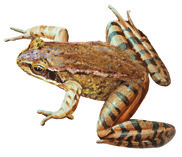

Los científicos dan importancia a la diferencia que existe entre los huevos de reptiles, aves y mamíferos y los de peces y anfibios. Investiga sobre ello y cita las fuentes consultadas.
Investiga las funciones de la cola prensil y de la cola aplanada de algunos animales. Menciona ejemplos de mamíferos que las tengan y explica cómo las usan. Cita las fuentes consultadas.
¿Averiguaste qué relación tienen los murciélagos con el radar de los barcos? ¿Se te ocurre alguna otra invención basada en una habilidad animal? Realiza una presentación, citando las fuentes.
Características de los mamíferos
Tener pelo es una de las características distintivas de los mamíferos. ¿Qué argumento esgrimirá para defender la idea de que el erizo pertenece al grupo de los mamíferos?
Investiga a qué se debe que los mamíferos tengan distintos tipos de dientes. Indica las fuentes consultadas.
Indica qué tienen en común y en qué se diferencian el ala de un murciélago y el ala de un jilguero.
Características externas
A partir de las características externas (escamas, posesión de pelo, etc.), construye una tabla dicotómica que permita determinar a qué grupo de vertebrados pertenecen estos animales.
Gallina marrónIlustración de un pezIlustración de un aveLagarto

Rana
Reflexiones finales
Elabora una tabla en la que aparezcan las características comunes y diferenciadores de los cinco grupos de vertebrados. Expón los resultados mediante murales ilustrativos.
Imagina la siguiente escena: un lagarto que acecha a un ratón en medio del verano. ¿Crees que es correcto afirmar que el lagarto y el ratón son animales de sangre fría y caliente, respectivamente? Explica tu respuesta.
Artículos y reflexiones
Lee el siguiente fragmento de un artículo del diario El País (02/12/2021).
Los animales han dejado de ser cosas para la legislación española. A partir de ahora, se considerarán seres sintientes y como tal tendrán un tratamiento legal diferente a la de cualquier objeto inanimado. No podrán ser embargados, hipotecados, abandonados, maltratados o apartados de uno de sus dueños en caso de separación o divorcio sin tener en cuenta su bienestar o su protección.
Debatir la importancia que puede tener esta noticia.
Lectura y análisis
Lee el siguiente texto tomado de una publicación de National Geographic del 8 de abril de 2020 y, a continuación, realiza las actividades que se proponen.
En el evento, el Centro para Grandes Simios, que refugia a los grandes simios, publicó un simpático video en YouTube en el que aparecía la orangután residente Sandra frotándose las manos en agua con jabón. Hace un par de semanas, el personal del centro pensó que sería bonito y relevante volver a compartir el video en Twitter.